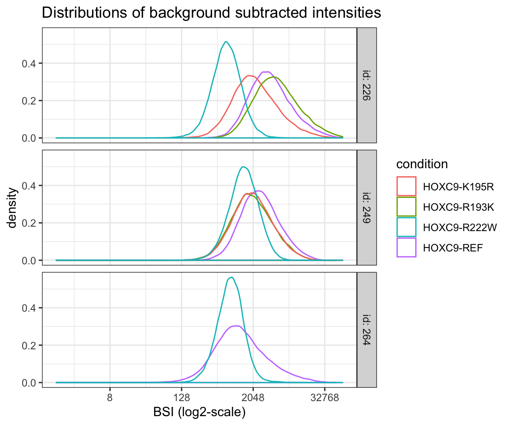
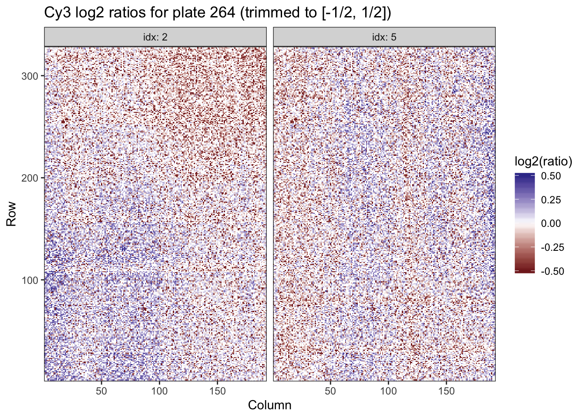
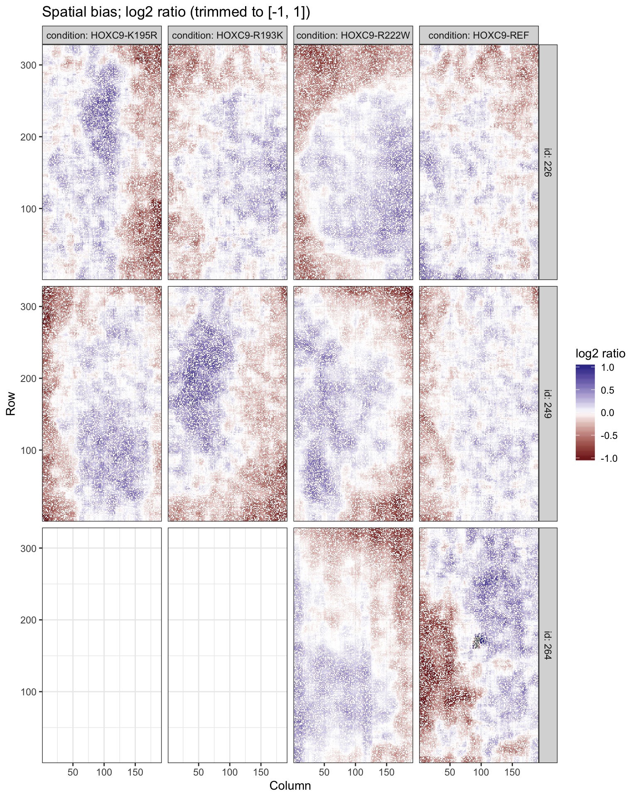
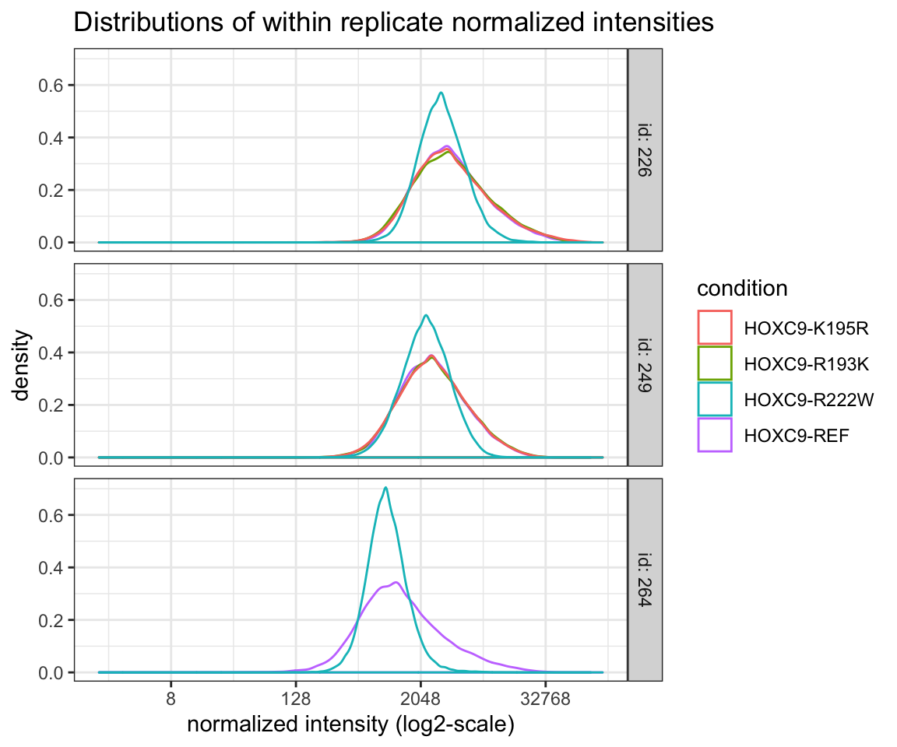
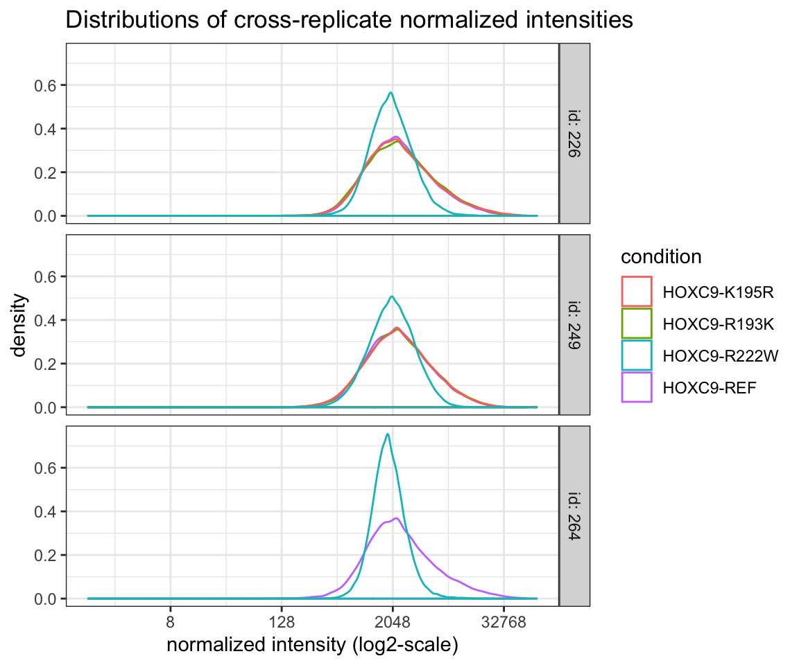

vignettes/analysis-preprocessing.Rmd
analysis-preprocessing.RmdFor an introduction to the upbm package, please see the quick start vignette (vignette("upbm-quickstart")). Here, we provide details on the pre-processing steps briefly referenced in the quick start vignette. We assume basic knowledge of the PBMExperiment class (see vignette("upbm-classes")). The same example HOXC9 dataset from the upbmData package is used in this vignette to illustrate the various functions.
In the quick start vignette, the pre-processing steps were performed using the upbm::upbmPreprocess wrapper function. Here, we cover the individual pre-processing steps and underlying functions in more detail. Additionally, we introduce some plots which can be used to visualize the results of pre-processing at each step. The steps covered in this vignette include: background subtraction, Cy3 normalization, spatial adjustment, as well as within and across replicate normalization.
suppressPackageStartupMessages(library("upbm"))Throughout, we will be using broom::tidy to tidy data stored in PBMExperiment and SummarizedExperiment objects for interactive analysis and plotting (see vignette("other-tidydata")). We load the dplyr package to help with interactive analysis.
suppressPackageStartupMessages(library("dplyr"))
suppressPackageStartupMessages(library("ggplot2"))For details on the example HOXC9 dataset, see the quick start vignette in this package or the upbmData package vignette. Here, we will use both Alexa488 and Cy3 scans.
Here, we again use just single PMT gain scan for the Alexa488 scans.
Array scans stored as GPR files include both foreground and background intensity measures for each probe on the array. By default, both median foreground and background intensities are read in from GPR files and stored in the PBMExperiment objects when data are loaded using gpr2PBMExperiment(..). The foreground and background intensities are stored as separate "fore" and "back" assays in each object.
## [1] "fore" "back"This default behavior can be changed to instead read mean (rather than median) foreground and background intensities, or to simply ignore background intensities by modifying the useMedian = and readBackground = parameters of gprPBMExperiment(..).
The background intensities are useful for measuring non-specific fluorescence at each probe for each scan. Typically, background intensities are subtracted from foreground intensities to return “background subtracted intensities” (BSIs) for each probe. This is performed for both Alexa488 and Cy3 scans using backgroundSubtract(..).
alexa_subset <- backgroundSubtract(alexa_subset, assay = "fore", assayb = "back")
hoxc9cy3 <- backgroundSubtract(hoxc9cy3, assay = "fore", assayb = "back")Rather than creating a new assay in the PBMExperiment objects, BSIs replace the "fore" assay values of each assay. Any probes which negative BSIs (corresponding to probes with background intensities greater than foreground intensities) are set to NA. This can be changed by setting nonnegative = FALSE in the call to backgroundSubtract(..).
We take a look at the distribution of BSIs for each sample by tidying the new "fore" assay.
tdat <- broom::tidy(alexa_subset, "fore", long = TRUE)
tdat# # A tibble: 419,440 x 16
# Column Row probeID Sequence cname fore date version id reuse
# <int> <int> <chr> <chr> <chr> <dbl> <dbl> <chr> <dbl> <dbl>
# 1 6 1 dBr_14… GGTGTGA… s4 9051 170606 v14 226 1
# 2 7 1 dBr_06… CAGTCTA… s4 17547 170606 v14 226 1
# 3 8 1 dBr_39… CTTTTTA… s4 19086 170606 v14 226 1
# 4 9 1 dBr_06… CAGCTAC… s4 3720 170606 v14 226 1
# 5 10 1 dBr_05… GCTTCGA… s4 4100 170606 v14 226 1
# 6 15 1 dBr_16… CGCCCGT… s4 16224 170606 v14 226 1
# 7 23 1 dBr_20… TTAGCCC… s4 6165 170606 v14 226 1
# 8 24 1 dBr_25… TGCACAA… s4 3098 170606 v14 226 1
# 9 26 1 dBr_40… GGATGCC… s4 2917 170606 v14 226 1
# 10 27 1 dBr_21… GTCAGAA… s4 4006 170606 v14 226 1
# # … with 419,430 more rows, and 6 more variables: type <chr>, pmt <dbl>,
# # idx <dbl>, target <chr>, condition <chr>, id_idx <chr>The column names from the PBMExperiment are stored in the "cname" column, along with allele information in "condition", and plate IDs in "id". We will use these annotations to stratify samples by plate and color by condition.
ggplot(tdat, aes(x = fore, group = cname, color = condition)) +
geom_density() +
scale_x_continuous("BSI (log2-scale)", trans = "log2") +
facet_grid(id ~ ., labeller = label_both) +
theme_bw() +
ggtitle("Distributions of background subtracted intensities")## Warning: Transformation introduced infinite values in continuous x-axis## Warning: Removed 671 rows containing non-finite values (stat_density).
We can also take a look at the number of NA BSIs in each sample.
tdat %>%
dplyr::group_by(cname, id, condition) %>%
dplyr::summarize(nNA = sum(is.na(fore)),
pNA = mean(is.na(fore))) %>%
dplyr::arrange(nNA)## # A tibble: 10 x 5
## # Groups: cname, id [10]
## cname id condition nNA pNA
## <chr> <dbl> <chr> <int> <dbl>
## 1 s5 226 HOXC9-R193K 0 0
## 2 s34 264 HOXC9-R222W 2 0.0000477
## 3 s17 249 HOXC9-REF 5 0.000119
## 4 s7 226 HOXC9-R222W 5 0.000119
## 5 s4 226 HOXC9-REF 6 0.000143
## 6 s19 249 HOXC9-K195R 7 0.000167
## 7 s20 249 HOXC9-R222W 8 0.000191
## 8 s18 249 HOXC9-R193K 14 0.000334
## 9 s6 226 HOXC9-K195R 28 0.000668
## 10 s33 264 HOXC9-REF 593 0.0141We see that one sample has over 500 NA values. However, since this is less than 2% of all probes, we do not worry too much.
After background subtraction, we perform Cy3 normalization and filtering. In addition to Alexa488 scans which measure TF binding at each probeon an array, Cy3 scans are often also taken to measure dsDNA abundance at each probe. Briefly, small quantities of Cy3-conjugated dUTP are incorporated into the primer extension reactions (e.g. at 1:25 ratio against untagged dTTP) to measure double-stranding efficiency at each probe. The relative over or under abundance of Cy3-tagged dUTP at a probe on an array can be used to normalize for the relative abundance of dsDNA at each probe. Additionally, large deviations from expectation in Cy3 at a probe can be used to filter outlier probes from the Alexa488 data. dUTP abundance is highly dependent on probe sequence as noted in Berger et al. (2006), making comparison across probes within arrays difficult. However, since dUPT abundance is independent of the assayed proteins, probe-level dUTP should be consistent across arrays with the same probe design. Therefore, the expected Cy3 intensity for each probe can be approximated using an empirical reference calculated using a large collection of Cy3 scans from arrays with the same design. An empirical reference calculated using 90 Cy3 scans is provided in the upbmAux package for the v14 uPBM array design (corresponding array design pbm_8x60k_v1).
data(refcy3_8x60k_v1, package = "upbmAux")
refcy3_8x60k_v1## class: PBMExperiment
## dim: 62976 4
## metadata(2): sfactor params
## assays(1): ref
## rownames: NULL
## rowData names(4): Column Row probeID Sequence
## colnames(4): probe_median probe_mean probe_mad probe_sd
## colData names(0):
## probeCols(4): Column Row probeID Sequence
## probeFilter names(1): probeID
## probeTrim: 1 36Given the reference distribution of probe intensities, the deviations from the expected Cy3 intensities can be calculated using cy3FitEmpirical(..).
hoxc9cy3e <- cy3FitEmpirical(hoxc9cy3, refcy3_8x60k_v1)The returned PBMExperiment object includes the assays of the input PBMExperiment object along with 4 additional assays.
## [1] "fore" "back" "expected" "ratio" "scores" "lowq"Most importantly, scaled observed-to-expected Cy3 intensities are stored in the "scores" assay along with binary TRUE/FALSE indicators for whether probes will be filtered as low quality in the "lowq" assay. The ratios are scaled to account for differences in cross-array varibility observed in the empirical distribution of Cy3 intensities. Intuitively, probes with lower adenine content and therefore dUTP incorporation and Cy3 intensities, will have different variability across replicate arrays than probes with higher Cy3 intensities. The cutoff for filtering probes can be modified by changing the cutoff = parameter of cy3FitEmpirical(..).
Again, by tidying the data, we can take a look at the number of filtered probes for each sample.
tdat <- broom::tidy(hoxc9cy3e, assay = "lowq", long = TRUE)
tdat %>%
dplyr::group_by(cname, id, idx) %>%
dplyr::summarize(nFilter = sum(lowq)) %>%
dplyr::arrange(nFilter)## # A tibble: 10 x 4
## # Groups: cname, id [10]
## cname id idx nFilter
## <chr> <dbl> <dbl> <int>
## 1 s14 249 4 0
## 2 s15 249 5 0
## 3 s38 226 3 0
## 4 s40 226 7 0
## 5 s16 249 8 1
## 6 s39 226 6 3
## 7 s13 249 1 6
## 8 s37 226 2 17
## 9 s30 264 5 1728
## 10 s29 264 2 2141Interestingly, we see that the two samples from plate 264 have the highest number of filtered probes. We can also take a look at the distribution of observed-to-expected ratios in the "ratio" assay.
tdat <- broom::tidy(hoxc9cy3e, assay = "ratio", long = TRUE)Since the tidy data includes probe position information (row and column indices), we can plot the log2 ratios as a heatmap using the probe coordinates.
tdat %>%
dplyr::filter(id == 264) %>%
ggplot(aes(x = Column, y = Row, fill = log2(ratio))) +
geom_tile() +
scale_fill_gradient2(limits = c(-1/2, 1/2), oob = scales::squish) +
theme_bw() +
scale_x_continuous(expand = c(0, 0)) +
scale_y_continuous(expand = c(0, 0)) +
facet_grid(. ~ idx, labeller = label_both) +
ggtitle("Cy3 log2 ratios for plate 264 (trimmed to [-1/2, 1/2])")
There appears to be a slight spatial trend in the observed-to-expected ratios as well.
Next, we normalize the Alexa488 scans according to the relative over or under abundance of dsDNA as measured by Cy3. We use information in "id_idx", a colData column which specifies the plate ID and array position of each scan in alexa_subset and hoxc9cy3e to uniquely match Alexa488 and Cy3 scans.
alexa_subset <- cy3Normalize(pe = alexa_subset, cy3pe = hoxc9cy3e, match_by = "id_idx")The returned PBMExperiment contains the Cy3-normalized Alexa488 probe intensities as a new "normalized" assay. By default, probes identified as low quality are set to NA, and all other probes are normalized according to the observed-to-expected Cy3 ratios. This can be changed by setting filter = FALSE or scale = FALSE in cy3Normalize(..).
Next, we perform spatial adjustment to correct for bias due to uneven distribution of the protein across each array. This step requires row and column coordinates be specified for all probes as "Row" and "Column" columns in the rowData (taken from the PBMDesign specified when reading the GPR data). Probe coordinates are specified for all standard uPBM designs included in the upbmAux package. Note that while we saw a slight spatial pattern in the Cy3 bias, the spatial adjustment performed here corrects for a separate bias introduced at a downstream step of the experimental process.
Spatial adjustment is performed as described in Berger et al. (2006) and Berger and Bulyk (2009). Briefly, the median probe intensity within a K-by-K region around each probe is compared to the median probe intensity across the entire array. Since probes are positioned randomly across the array, difference between the local median around a probe and the global median is considered spatial bias which should be removed. By default, K is set to 15. However, this can be changed by specifying k = when calling spatiallyAdjust(..).
alexa_subset <- spatiallyAdjust(alexa_subset)The spatially adjusted probe intensities are stored in the "normalized" assay, overwritting the previous data in this assay (if Cy3 normalization was performed). The returned PBMExperiment includes only the subset of probes passing the filtering criteria specified in the probeFiter slot of the PBMExperiment taken from the PBMDesign specified when reading the GPR data (for more details, see: upbm: Class Details). In this case, this includes all probes with probe IDs prefixed by dBr_.
## DataFrame with 41944 rows and 4 columns
## Column Row probeID
## <integer> <integer> <character>
## 1 6 1 dBr_14334_Jan07
## 2 7 1 dBr_06208_Jan07
## 3 8 1 dBr_39317_Jan07
## 4 9 1 dBr_06987_Jan07
## 5 10 1 dBr_05074_Jan07
## ... ... ... ...
## 41940 177 328 dBr_41722_Jan07
## 41941 182 328 dBr_41538_Jan07
## 41942 186 328 dBr_02271_Jan07
## 41943 187 328 dBr_19625_Jan07
## 41944 189 328 dBr_29130_Jan07
## Sequence
## <character>
## 1 GGTGTGAGTCCATTTCGTCAAACCAACGCAACAGGTGTCTGTGTTCCGTTGTCCGTGCTG
## 2 CAGTCTAAGTTTTCGGATTACCATTAGAAATTGATGGTCTGTGTTCCGTTGTCCGTGCTG
## 3 CTTTTTAAAGACCTAGGAATCATTGCATTCTTATTGGTCTGTGTTCCGTTGTCCGTGCTG
## 4 CAGCTACGGAAGAGTAAAGGTTGTCGAAGCCGTGCAGTCTGTGTTCCGTTGTCCGTGCTG
## 5 GCTTCGAACGTGGGCGATGGAACAAGTCGCAGTCATGTCTGTGTTCCGTTGTCCGTGCTG
## ... ...
## 41940 GATGAAGGTACTCTCTTGCACCGTTACACGATTAACGTCTGTGTTCCGTTGTCCGTGCTG
## 41941 CTGTACTCCTGCACAGCGGAAACTGAGGGTCGTTGAGTCTGTGTTCCGTTGTCCGTGCTG
## 41942 CCCCGTAGCGGGAAACTATTGAGACTGCCTTATCTGGTCTGTGTTCCGTTGTCCGTGCTG
## 41943 TCTAGATTCCAGGTCCATCTTCCTCGTCCACAAGAAGTCTGTGTTCCGTTGTCCGTGCTG
## 41944 TACCATTTTATAGACAATGGACACCATTGCATGGTTGTCTGTGTTCCGTTGTCCGTGCTGBy default, the returned PBMExperiment includes the spatial bias estimates for each probe in the "spatialbias" assay. This can be changed by setting returnBias = FALSE.
## [1] "normalized" "fore" "back" "spatialbias"The spatial bias is stored as the local-to-global ratio, and can be plotted as before by tidying the assay data.
tdat <- broom::tidy(alexa_subset, assay = "spatialbias", long = TRUE)
tdat %>%
ggplot(aes(x = Column, y = Row, fill = log2(spatialbias))) +
geom_tile() +
scale_fill_gradient2("log2 ratio", limits = c(-1, 1), oob = scales::squish) +
theme_bw() +
scale_x_continuous(expand = c(0, 0)) +
scale_y_continuous(expand = c(0, 0)) +
facet_grid(id ~ condition, labeller = label_both) +
ggtitle("Spatial bias; log2 ratio (trimmed to [-1, 1])")
In general, probes near the edges of arrays appear to be more negatively biased relative to probes near the center of each array.
All prior pre-processing steps considered arrays separately. We next normalize across arrays in two steps - first within replicates with normalieWithinReplicates(..), and second across replicates with normalizeAcrossReplicates(..). Plate and condition information should be specified in the colData of the PBMExperiment object. By default, the normalization functions expect plate and condition labels to be included in columns named "id" and "condition". The condition and replicate ID colData columns can also be specified using the stratify = and group = parameters, respectively.
Additionally, within replicate normalization scales probe intensities to match a single baseline (reference) sample in the replicate. The baseline sample condition can be specified with the baseline = parameter. A single matching sample with the specified value in the stratify = column will be used as the baseline for normalization. If the baseline condition is not explicity specified, the function will attempt to guess the baseline condition by checking for any conditions ending in -ref (case insensitive). Here, "HOXC9-REF" will be used as the baseline condition.
## [1] "HOXC9-REF" "HOXC9-R193K" "HOXC9-K195R" "HOXC9-R222W" "HOXC9-REF"
## [6] "HOXC9-R193K" "HOXC9-K195R" "HOXC9-R222W" "HOXC9-REF" "HOXC9-R222W"Since the baseline condition ends in -REF, we do not need to explicitly specify the value to the function. Details on the normalization procedure is provided in the function documentation. By default, a simplified trimmed mean of M values (TMM) approach is used (Robinson and Oshlack 2010).
alexa_subset <- normalizeWithinReplicates(alexa_subset)We now replot the normalized probe intensities and see that within each replicate, intensity distributions no longer differ by global differences (see distribution of BSIs above).
broom::tidy(alexa_subset, long = TRUE) %>%
ggplot(aes(x = normalized, group = cname, color = condition)) +
geom_density() +
scale_x_continuous("normalized intensity (log2-scale)", trans = "log2") +
facet_grid(id ~ ., labeller = label_both) +
theme_bw() +
ggtitle("Distributions of within replicate normalized intensities")## Warning: Transformation introduced infinite values in continuous x-axis## Warning: Removed 4514 rows containing non-finite values (stat_density).
Next, samples are normalized across replicates. Notice above that log-scale normalized intensities not only differ by a shift but also a scaling factor between replicates. Cross-replicate normalization adjusts for both of these differences. Again, details on the approach used for estimating the normalization factors are described in the function documentation. However, note that normalization across replicates is performed using matching conditions across replicates. Initially, normalization is attempted using only the baseline condition samples. If some replicates do not contain baseline samples, they are normalized to the remaining (baseline sample containing) replicates using any other shared conditions. If a replicate does not share any sample conditions with any other replicates, it cannot be normalized. Therefore, cross-replicate (cross-plate) normalization will fail if any conditions are completely confounded with plates. If this is the case, we recommend using the rank-based approaches implemented in the Universal PBM Analysis Suite (Berger and Bulyk 2009).
alexa_subset <- normalizeAcrossReplicates(alexa_subset)Again, we can replot the normalized probe intensities after cross-replicate normalization.
broom::tidy(alexa_subset, long = TRUE) %>%
ggplot(aes(x = normalized, group = cname, color = condition)) +
geom_density() +
scale_x_continuous("normalized intensity (log2-scale)", trans = "log2") +
facet_grid(id ~ ., labeller = label_both) +
theme_bw() +
ggtitle("Distributions of cross-replicate normalized intensities")## Warning: Transformation introduced infinite values in continuous x-axis## Warning: Removed 4514 rows containing non-finite values (stat_density).
Normalized intensities are now roughly comparable across replicates and can now be passed to downstream modeling and inference steps.
In general, the default normalization parameters should be sufficient for most analyses. In this case, the upbmPreprocess(..) wrapper can be used to quickly run all of the above steps with a single command.
## not run
upbmPreprocess(pe = alexa_subset, cy3pe = hoxc9cy3, cy3refpe = refcy3_8x60k_v1)Additionally, non-default parameters can be specified to upbmPreprocess(..) using params =. The parameter takes a named list of named parameter values which will be used when the corresponding step is called in the pre-processing pipeline. If a pre-processing step should be skipped, this can also be specified with the skip = parameter. Examples of these parameters are provided in the function documentation.
Berger, Michael F, and Martha L Bulyk. 2009. “Universal Protein-Binding Microarrays for the Comprehensive Characterization of the Dna-Binding Specificities of Transcription Factors.” Nature Protocols 4 (3): 393–411.
Berger, Michael F, Anthony A Philippakis, Aaron M Qureshi, Fangxue S He, Preston W Estep III, and Martha L Bulyk. 2006. “Compact, Universal Dna Microarrays to Comprehensively Determine Transcription-Factor Binding Site Specificities.” Nature Biotechnology 24 (11): 1429–35.
Robinson, Mark D, and Alicia Oshlack. 2010. “A Scaling Normalization Method for Differential Expression Analysis of Rna-Seq Data.” Genome Biology 11 (3): R25.